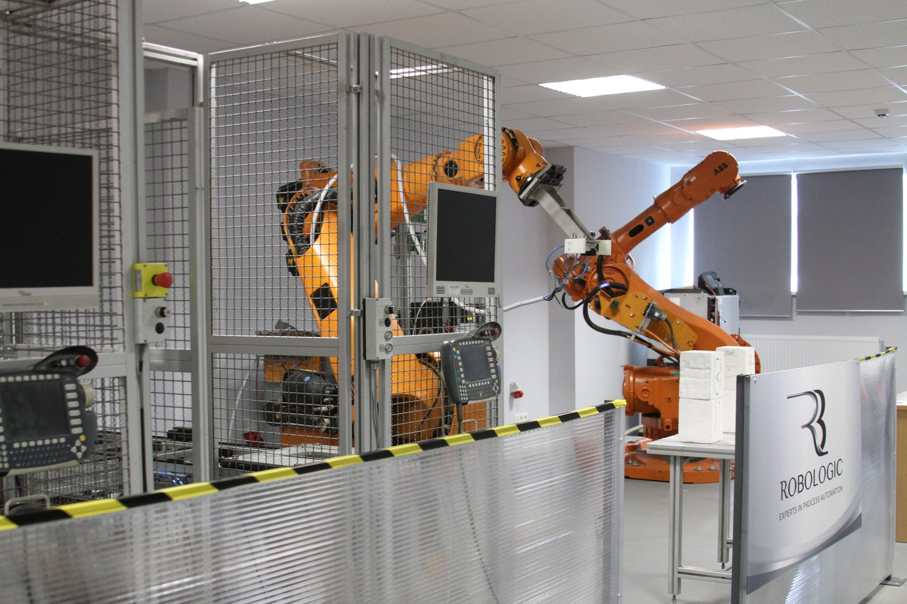

Introduction to Robotics
Transport and Telecommunication Institute
Robots:get here?
From clockwork dolls to machines that learn.
Prof. Emmanuel A. Merchán-Cruz
Minute 0 to 1
OPEN Nothing. Press F for full screen. Press n for this notes window.
SAY "For the next 90 minutes we follow one question: who does the work, and who tells the machine what to do? Behind me the same points of light build four machines: a writing doll from 1774, the first factory robot from 1961, the six-axis arm of today and a humanoid from this year. By the end you will know what changed from each one to the next."
DO Let the four machines cycle while people sit down. Each stays about five seconds. Drag with the mouse to turn the scene.
Hands up
Which of these is a robot?
A washing machine It runs a programme by itself.
A drone flown by remote control A person steers it with two sticks.
A robot vacuum cleaner It maps the flat and cleans it alone.
A chatbot It answers questions and writes code.
A welding arm in a car factory It repeats the same path all day.
A writing doll from 1774 Clockwork makes it write a sentence.
Minute 1 to 3
OPEN Nothing.
SAY "Hands up if you think it is a robot. Washing machine? Remote-control drone? Robot vacuum? Chatbot? Welding arm? The writing doll?" Then: "Remember your votes. We vote again in half an hour, with a definition."
DO Count the hands for each card out loud and write the six numbers on the board. Do not give the answers yet. The verdicts come on slide 19.
The next 90 minutes
Seven stops
Stop 1 Before robotsAutomata, cams and punched cards.
Stop 2 Four revolutionsSteam, electricity, computers, networks.
Stop 3 What is a robot?A definition, the parts, the families.
Stop 4 Robots in numbersWhere the world's robots work in 2026.
Stop 5 Robots 4.0Cyber-physical systems, twins, cobots.
Stop 6 Robots that learnAI gets a body. Humanoids in 2026.
Stop 7 Industry 5.0 and youJobs, skills and your programme.
All the way AskStop me at any time. The demos are live.
Minute 3 to 4
OPEN Nothing.
SAY "Seven stops. The first two are history, about 25 minutes. Then what a robot is, the numbers for 2026, and the two changes of the last three years: robots that learn, and factories built around people. We finish with what this means for your own programme."
DO Point at stop 6 and say this is the part that did not exist when this talk was first given.
1
Machines that move
Automata, from the year 60 to 1800.
Minute 4 to 4.5
OPEN Nothing.
SAY "Long before factories, people built machines that moved alone. The figure behind me stands for them: a clockwork doll at a writing desk. In two minutes you see the mechanism that moves its hand."
DO Move on quickly.
Automata
2,000 years of self-moving machines
c. 60 Heron of Alexandria: temple doors that open alone, a theatre that plays a story by itself1206 Al-Jazari: water clocks and a drummer driven by a drum of pegs. Move the pegs, change the rhythmc. 1495 Leonardo da Vinci: sketches of a mechanical knight moved by cables1770s Jaquet-Droz, The Writer: a doll that writes any text of up to 40 characters
Minute 4.5 to 7.5
OPEN The video on the right (33 seconds, your own clip). The next click starts it.
SAY "Heron's machines used ropes and falling weights. Al-Jazari's drummer is the first machine I know whose behaviour you could change without rebuilding it: you moved the pegs. Six hundred years later a Swiss watchmaker built a doll that writes with a quill. It still works, in a museum in Neuchâtel." After the video: "Who was controlling the doll while it wrote?" Expected answer: nobody, the motion is stored inside it.
DO Press next once to play the video. Press next again to move on. K pauses.
How the doll knows what to write
The program is
One cam pushes the pen sideways. The other pushes it up and down. Change the two cams and the same machine draws a new figure.
1 Circle 2 Figure 8 3 Star 4 Heart
A simplified model with two cams. The Writer uses a stack of cams, three for each letter.
Minute 7.5 to 9.5
OPEN The four buttons, or keys 1 to 4. Each one cuts two new cams.
SAY "Look at the two brass discs. They are not round. Each bump lifts a rod, and the rods move the pen. Circle: both cams are plain eccentrics." Click Star. "Now the cams have five bumps. Same machine, new drawing. So where is the program?" Expected answer: in the shape of the cams. "A cam is a memory made of metal. To change the program you file a new cam."
DO Click Circle, then Star, then Heart. Wait one full turn each time so the class sees the figure close. Drag the scene to show the cams from the side.
1804 · Joseph-Marie Jacquard
A program you can swap: punched cards
The cards: click to punch
Each row is one card. A hole lifts one thread, so the gold thread shows on top.
Hole or no hole: 1 or 0. Swap the cards and the same loom weaves a new cloth.
Heart TSI Diamond Clear
Row 1 as bits: 0000000000
Minute 9.5 to 11
OPEN The card grid on the left. Click any circle to punch or close a hole. The buttons load a ready pattern.
SAY "A cam is hard to change. In 1804 Jacquard put the program on cards. Each card is one row of the picture. Where there is a hole a hook passes and lifts a thread." Click Heart. "The loom has not changed. Only the cards." Click TSI. "Charles Babbage copied this idea for his Analytical Engine, and computers read punched cards until the 1970s."
DO Click Heart, then TSI. Ask one student to call out holes for the first row and punch them. Read the bits under the buttons aloud.
The word arrives before the machine
"Robot" starts
1921 Karel Čapek's play R.U.R. opens in Prague. "Robot" comes from the Czech robota , forced labour1939 Westinghouse shows Elektro at the New York World's Fair. It walks, talks and smokes when its operator gives the word1942 Isaac Asimov prints the Three Laws of Robotics in the story Runaround, and invents the word "robotics"1961 The first industrial robot starts work
Minute 11 to 14
OPEN The video on the right (2:29, your own clip). Play about the first 1:30.
SAY "The word is 40 years older than the first working robot. Čapek's robots were artificial workers in a play. The machines in this film look like robots, but watch for what they cannot do." After the film: "Could Elektro decide anything by itself?" Expected answer: no, an operator triggered each action. "For the public, a robot was a metal man. For engineers it became something else, and that starts in a car factory."
DO Press next to play. Stop after about 90 seconds with next.
Stop 2
Robots and the industrial revolutions
Minute 14 to 15
OPEN Nothing.
SAY "Historians count industrial revolutions. Each one answers our question in a new way. 1780: steam does the work. 1870: electricity, and the work is cut into small steps. 1970: a computer tells the machine what to do. 2011: the machines talk to each other. 2021 is not a new technology. It is a new purpose." The dates are labels. Old and new always overlap.
DO Point at each pin from left to right as you name it.
First Industrial Revolution · about 1780
Steam and
c. 1764 Spinning jenny: one worker spins many threads1769 Water frame: spinning moves into mills, the first factories1769-76 Watt's steam engine frees factories from rivers1788 Watt's governor: the engine controls its own speed
Minute 15 to 16.5
OPEN The video on the right (17 seconds, your own clip).
SAY "Machines take over work that hands had done for centuries, first in making cloth. This is mechanisation: the machine supplies the force, a person still guides it. But one device from 1788 does something new, and it is on the next slide."
DO Press next to play the short clip, then next again.
1788 · James Watt
A machine that
Faster engine: the balls fly out, the sleeve rises, the valve closes. Measure, compare, correct. Every robot joint still runs this loop.
Engine load 100%
Governor on Governor off
Speed, rpm 120
Target 120
Steam valve 50%
Minute 16.5 to 19
OPEN The slider "Engine load" and the two buttons.
SAY "The mill wants 120 turns a minute. I take half the load away." Drag the slider to 50%. "The speed hardly moves: the balls flew out and closed the valve." Now click Governor off and repeat. "Without it the engine runs away to 240." Ask: "What three things does the governor do?" Expected answer: it measures the speed, compares it with what we want, and corrects the steam. "That is feedback control. Maxwell wrote the first theory of it in 1868, On Governors."
DO 1. Governor on, load to 50%, read the speed (about 127). 2. Governor off, same load, read the speed (about 240). 3. Governor on again, load to 180%, read the valve (it opens wide).
Second Industrial Revolution · about 1870
Electricity and
1913 Ford starts the moving assembly line at Highland Park
12.5 h to build one chassis before the line
93 min to build one chassis a year later
The work comes to the worker. Each person does one short task, again and again.
The assembly line1:57 · the next click plays it
Minute 19 to 21.5
OPEN The film tile at the bottom left (1:57, your own clip). It opens full screen. Play about one minute.
SAY "Electric motors can sit on every machine, so the factory can be laid out along the product. Parts are made to standard sizes. On 7 October 1913 Ford's line starts moving." After the clip: "Look at the people in the model. What kind of work is this?" Expected answer: short, repeated, tiring. "Work that is dull, dirty or dangerous. Remember those three words. They are the reason for the next slide."
DO Press next to play it full screen. Press next again after about a minute: that closes the film and moves on.
Third Industrial Revolution · about 1970
Electronics, computers
1961 Unimate starts work at General Motors, lifting hot metal castings1969 The first PLC , a small computer that replaces walls of relays1973 KUKA FAMULUS : six axes, all driven by electric motors1978 PUMA and SCARA : robots for small, fast assembly
The third revolution0:48 · the next click plays it
Minute 21.5 to 23.5
OPEN The film tile at the bottom left (48 seconds, your own clip). It opens full screen.
SAY "A machine no longer needs a cam or a card for every move. A program in memory tells it what to do, and you can change the program in minutes. The robot on the right is the first one that worked in a factory. It took the job nobody wanted: lifting red-hot castings out of a die-casting machine."
DO Press next to play the clip full screen, then next again to close it and move on.
1961 · Devol and Engelberger
Teach once,
Unimate could not see or think. An operator moved the arm to each position and saved it.
Teaching: the arm is led slowly to five points. Each one is saved.
Repeating: the robot plays the five points back, all day.
Many factory robots are still programmed like this, with a teach pendant.
Minute 23.5 to 25.5
OPEN Nothing to open. One click switches from teaching to repeating.
SAY While it teaches: "The numbers are the saved points. One: wait. Two: reach into the die. Three: pull the casting out. Four: turn. Five: lower it into the water." Click. "Now it repeats. Ask it to pick a casting that lies ten centimetres to the left, and it closes its gripper on air." Ask: "What is missing?" Expected answer: sensors, any way to notice the world.
DO Wait until all five yellow points are shown, then press next once to switch to repeat mode. The orange block is the hot casting. It turns grey in the water tank.
Fourth Industrial Revolution · named in 2011 at the Hannover fair
Industry 4.0: nine technologies
1 Virtual reality0:51
2 Additive manufacturing0:51
3 Internet of things0:52
4 Big data0:37
5 Cloud computing0:27
6 Advanced simulation0:36
7 Autonomous robots0:38
8 Universal integration0:49
9 Cybersecurity0:25
Pick two Click a tile, or press its number. Esc closes the film.
Which of the nine is your own field?
Minute 25.5 to 27.5
OPEN Two of the nine tiles (your own clips, 25 to 52 seconds each). Suggested: 7 Autonomous robots and 6 Advanced simulation. Key 7 and key 6 open them, Esc closes.
SAY "The name Industrie 4.0 was first used at the Hannover fair in 2011. The idea is that machines carry sensors, share data over a network and are steered by software that learns from that data. These are the nine technologies usually listed." Ask: "Which of the nine belongs to your programme?" Take two answers and play those two clips if the class chooses.
DO Play two clips, no more. Close each with Esc.
The thread through 800 years
Each step moved more of the"how" out of metal and into software.
1206 Peg Move a peg, change the rhythm.
›
1774 Cam File a new cam, change the drawing.
›
1804 Card Swap the cards, change the cloth.
›
1961 Program Teach new points, change the job.
›
2020s Model Show examples. The robot learns the job.
Minute 27.5 to 28
OPEN Nothing.
SAY "Peg, cam, card, program, model. Each time the machine itself changes less, and what we change gets softer. That is why a robotics lecture is also a lecture for computer scientists. The last box is stop 6."
DO Read the five boxes from left to right. Then move on.
3
What is a robot?
A definition, the parts and the families.
ISO 8373:2021, Robotics: Vocabulary
A robot is a programmed actuated mechanism with a degree of autonomy to perform locomotion, manipulation or positioning .
Programmed Its task is written down and can be changed.
Actuated mechanism It has a body with motors. Software alone is not a robot.
A degree of autonomy It decides something itself, from what it senses.
Three kinds of task It moves itself, or it moves and places things.
Industrial robot: an automatically controlled, reprogrammable, multipurpose manipulator, programmable in three or more axes.
Minute 28.5 to 30.5
OPEN Nothing. Five clicks: one per part of the sentence, then the industrial robot line.
SAY One click per part. "Programmed: someone can change what it does." "Actuated mechanism: it has a body that moves." "A degree of autonomy: this is the new part compared with a machine tool. The standard defines autonomy as doing the task from the current state and from sensing, without a person stepping in." "And the task is one of three: move itself, handle something, or position something." Last click: "An industrial robot is the narrow case: a reprogrammable arm with at least three axes."
DO Click five times, slowly. Note for you: the earlier version of this talk quoted the 2012 edition. This is the 2021 edition. A new revision is in draft (ISO/DIS 8373, December 2025).
The vote, again
Which of these is a robot?
NO A washing machine Programmed? Body? Autonomy? Task?
Programmed and actuated, but it does not handle or move anything on its own judgement. An automatic machine.
NOT YET A drone flown by remote control Programmed? Body? Autonomy? Task?
The person decides everything. Give it a route to fly alone and it becomes a robot.
YES A robot vacuum cleaner Programmed? Body? Autonomy? Task?
It senses the room, plans its path and moves itself. A service robot.
NO A chatbot Programmed? Body? Autonomy? Task?
No actuated mechanism. It is software. Put it in charge of a body, and that changes.
YES A welding arm in a car factory Programmed? Body? Autonomy? Task?
Reprogrammable, six axes, handles a tool. The classic industrial robot.
ALMOST A writing doll from 1774 Programmed? Body? Autonomy? Task?
Programmed by its cams and actuated, but it senses nothing. An automaton.
Minute 30.5 to 32.5
OPEN Nothing. Six clicks, one verdict each. You can also click a card with the mouse.
SAY Before each click ask the class to test the four words: "Programmed? Body? Autonomy? Task?" Then click and compare with the numbers on the board from the first vote. The drone and the chatbot give the best discussion: both become robots when the missing part is added. Say that people argue about the washing machine, and that the test is what matters, not the label.
DO Six clicks. After the last one, ask who changed their mind on at least one.
What autonomy looks like
Sense, think, act
Sense: a laser scanner measures the distance to every wall and boxThink: the hits build a map, and the robot plans a path on itAct: the wheels follow the path, and the loop starts again
Drop a box in its way Clear
Minute 32.5 to 34.5
OPEN The button "Drop a box in its way".
SAY "Blue lines: the laser. Yellow dots: every place the laser has hit something. That cloud of dots is the robot's map. Green line: the path it planned to the green ring." Click the button. "I just put a box on its path. Watch the green line." Ask: "Who told it to go around?" Expected answer: nobody. It sensed the box and planned again. "Unimate would have driven into it."
DO Drop a box two or three times. Each time the green path must change. Press Clear at the end.
The parts
Anatomy of an industrial arm
Links are the rigid parts. Joints connect them and are driven by motors.
Each joint that a motor drives is one axis . This arm has six.
Minute 34.5 to 35.5
OPEN Nothing. Two clicks: first the names of the parts, then the six axes.
SAY First click: "Base, links, the end effector, which is whatever tool is bolted to the last flange, and the controller. The teach pendant is the hand-held box Unimate's grandchildren are still programmed with." Second click: "Count the orange circles with me. Six motors, six axes."
DO Click twice. Count the six numbers aloud with the class.
Degrees of freedom
Why six axes?
Three axes put the hand anywhere in space. Three more turn it to any direction.
Minute 35.5 to 37
OPEN The six sliders and the button "Show each axis".
SAY "Axis 1, 2 and 3 are the big ones. Watch where the wrist goes." Move sliders 1, 2, 3. "Now the wrist stays in place and only the gripper turns." Move 4, 5, 6. Ask: "A body in space has how many degrees of freedom?" Expected answer: six, three positions and three rotations. "So six axes is the smallest number that can reach any position with any orientation. A SCARA has four, and that is enough for its job."
DO Move sliders 1 to 3, then 4 to 6. Or press "Show each axis" and name each axis as it moves. Press Home before you leave.
Five families of industrial robot
1 of 5 Articulated armSix turning joints, like a shoulder, an elbow and a wrist. The all-rounder: welding, painting, handling.
2 of 5 SCARAUp a column, then two arms that swing in a flat plane, and a shaft that moves down. Four axes. Fast assembly of small parts.
3 of 5 DeltaThree light arms hold one small plate, and the motors stay on the frame. The fastest picker: food, medicine, electronics.
4 of 5 Cartesian or gantryThree straight axes at right angles. Simple and stiff. A 3D printer and a CNC machine are built this way.
5 of 5 Collaborative robotA light arm that senses contact and stops. It may share the bench with a person, without a fence.
Minute 37 to 39
OPEN Nothing. Four clicks fly the camera along the row.
SAY One sentence per robot, then one question. Articulated: "The one you saw." SCARA: "Follow its shape: up the column, out along two arms, down the shaft. Why is it fast?" Expected answer: its arms only swing in a flat plane, and gravity is carried by the column. Delta: "Where are the motors?" Expected answer: on the frame, so the moving part weighs almost nothing. Gantry: "Where have you seen this?" Expected answer: a 3D printer. Cobot: "What is missing around it?" Expected answer: the fence.
DO Four clicks. Let each robot finish one pick before you move on.
Robots that move themselves
Wheels Autonomous mobile robotIt carries shelves and pallets through a warehouse and plans its own route around people.
Rotors DroneA flying robot. With a route and sensors it inspects, maps and delivers without a pilot.
Four legs QuadrupedIt walks where wheels cannot: stairs, gratings, building sites. Today it mostly inspects plants.
Two legs HumanoidBuilt like us, so it can use our stairs, doors and tools. The newest family. More at stop 6.
Minute 39 to 40.5
OPEN Nothing. Three clicks along the row.
SAY "The definition said locomotion. These four move themselves." Mobile robot: "It lifts the whole shelf and brings it to the person." Drone: "Aviation students, this one is yours. We fly it at stop 6." Quadruped: "Look at the knees: all four point backwards." Humanoid: "Why build a robot shaped like a person?" Expected answer: because the world is built for people.
DO Three clicks. Keep it short, the humanoid returns later.
4
Robots in numbers
The count for 2025, published in autumn 2026.
Minute 40.5 to 41
OPEN Nothing.
SAY "The International Federation of Robotics counts the world's robots every year. These numbers are eight weeks old."
DO Move on.
Industrial robots, end of 2025
5,079,078 robots at work in factories
+9% more than a year earlier, and double the number of seven years ago
603,000 new robots installed in 2025, the first year above 600,000
655,000 expected in 2026
806,000 expected in 2029
IFR: the facts in a short film1:35 · YouTube
Source: International Federation of Robotics, World Robotics 2026, press release of 24 September 2026.
Minute 41 to 42.5
OPEN Optional: the tile on the right is the IFR's own film (1:35, YouTube, needs internet). Use it only if you are ahead of time.
SAY "Five million and seventy-nine thousand. Seven years ago it was less than half of that. And 2025 is the first year in which more than 600,000 new robots were installed." Ask: "Guess: which country installed more than half of them?" Take guesses, then go to the next slide.
DO Let the counters finish. Take three guesses from the class.
New robots installed in 2025
Where did they go?
China: 354,000. That is 59% of the world total, and 20% more than in 2024.
Japan, South Korea and India follow in Asia.
Germany: just under 25,000, which is 41% of the European Union's total. Its sales fell by 8%.
Italy, France and Spain also bought fewer.
United States: about 38,500. It passed Japan and is now the second largest market.
Brazil grew by 38%. Mexico fell by 7%.
Source: IFR, World Robotics 2026. The height of each bar grows with the square root of the number.
Minute 42.5 to 44.5
OPEN Nothing. Two clicks turn the globe: Asia, Europe, the Americas.
SAY Asia: "China alone: 354,000. More than the rest of the world together. And 55% of the robots sold in China are now made by Chinese suppliers." Europe: "Germany is fifth in the world and buys 41% of the EU's robots, but it bought fewer than the year before. So did Italy, France and Spain." Americas: "The United States is now second, ahead of Japan."
DO Two clicks. Tell the class the bars are not to scale in height: China's bar would leave the screen. The numbers on the labels are exact as published.
Robot density, 2025
Industrial robots per 10,000 factory workers
European Union 240, average
Source: IFR press release, 12 November 2026 (data for 2025). Not the full ranking: the countries the release names.
Minute 44.5 to 46.5
OPEN Nothing.
SAY "Counting robots favours big countries. Density is fairer: robots for every 10,000 people who work in manufacturing. South Korea has more than one robot for every ten workers." Ask: "China buys 59% of the world's robots. Why is it only 19th here?" Expected answer: the number is divided by a very large workforce. Add: "This figure for China is new. The IFR now uses China's own economic census for the number of workers. Its density still grew by 147% in five years."
DO Read the top four. Then ask the China question and wait for an answer. Note for you: these ten are the countries the press release names, not the top ten. Sweden, Denmark, Slovenia and the Netherlands are also in the top ten but the release gives no figures for them.
Outside the factory, 2025
Service robots grow faster
250,000 professional service robots sold, up 24%
117,500 of them carry goods: transport and logistics, 47%
8,400 surgical robots sold, up 57%
34.2 m consumer robots sold, mostly for the home, up 37%
1 million robots in Amazon's warehouses: the millionth went to Japan in June 2025
500,000 paid driverless taxi rides a week at Waymo, March 2026
7,000 humanoid robots sold in the whole world. Keep this number for stop 6
47% of professional service robots move things from A to B
Sources: IFR World Robotics 2026, Service Robots (30 September 2026). Amazon, 30 June 2025. Waymo, reported 26 March 2026.
Minute 46.5 to 48
OPEN Nothing.
SAY "A service robot does useful work outside a production line. Almost half of the professional ones do one thing: carry goods. Amazon alone runs a million robots. That is about one for every five factory robots in the world." Point at the orange tile. "And this is the number of humanoids sold in 2025: about seven thousand. Hold it against five million. We need it in 20 minutes."
DO Point at the orange tile last. Note for you: the 250,000 is "almost 250,000" in the IFR text, and the humanoid figure is the IFR's estimate, quoted in the press.
5
Robots 4.0
Robots as cyber-physical systems.
Cyber-physical systems
A machine and its software, joined by data
Robots and other cyber-physical systems sense, process and react to information from the physical world.
They must work safely even when the world is uncertain and their resources are limited.
Research questions: visual perception, inference from data, machine learning and control.
Minute 48.5 to 50.5
OPEN Nothing. One click injects a fault into the real robot.
SAY "Left: the real arm, with a sensor on every joint. Right: its digital twin, a software copy fed by those sensors. Blue dots are measurements going to the twin. Yellow dots are commands coming back." Click. "I have just worn out a bearing on axis 3. You can hardly see it on the real arm. The twin sees the vibration in the data and warns before the robot fails." Ask: "What would Unimate's owner have done?" Expected answer: waited until it broke.
DO One click. Point at the two red labels. The fault and the warning are an illustration, not a real diagnosis model.
Robots 4.0 at work your own compilation · 7:16 · play the first three minutes
Minute 50.5 to 53.5
OPEN The film (your own compilation, 7:16). Play about three minutes.
SAY Before: "Count the kinds of robot you see, and where each one works." After: "Which ones were in a factory?" Expected answer: the cobots. "The surgical robot, the warehouse fleet and the delivery robots are service robots. All of them are connected."
DO Press next to play. Stop with next after about three minutes (the Starship delivery robots are a good place to stop).
Collaborative robots
No fence
Sensors watch how far away the person is. The robot slows down, then stops before contact.
Distance 4.0 m
Person walks alone
Robot speed 100%
State Full speed
The first cobot sold: Universal Robots UR5, 2008. Safety rules: ISO 10218 (new edition 2025).
Minute 53.5 to 56.5
OPEN The slider "Distance". Moving it takes the person over. The button gives the person back to the computer.
SAY "A classic robot is fast and strong, so it works behind a fence. Open the gate and it stops. A cobot is allowed to share the space." Drag the person in. "Green zone: full speed. Amber: 30%. Red: protective stop. The caps on its joints show the state." Ask: "The robot now moves twice as fast. What must happen to the red zone?" Expected answer: it must grow, because the robot needs more distance to stop. "This method is called speed and separation monitoring."
DO Drag the slider slowly from 4 m to 1 m and back. Read the speed aloud at 3 m, 2 m and 1 m. The 30% and the zone sizes are chosen for the demo. Real cells calculate them from the standard.
6
Robots that learn
What changed between 2023 and today.
Minute 56.5 to 57
OPEN Nothing.
SAY "Everything so far I could have told you three years ago, with older numbers. This stop I could not. In 2023 the language models you use every day started to be connected to robot bodies."
DO Move on.
Two ways to tell a robot what to do
Programmed, or taught by example
Programmed since 1961 An engineer teaches every point The part must lie in the same place every time A new product needs a new program Fast, exact and tireless at its one task Learned since about 2023 The robot learns from thousands of examples It finds the part with its cameras You give the task in plain words Still slower and less reliable than a programmed robot at one fixed task
Minute 57 to 58.5
OPEN Nothing. One click shows the last line on the right.
SAY "Left: Unimate and almost all of the five million robots we counted. Right: a model, like the ones behind a chatbot, that takes camera images and words in and gives motor commands out. The research name is vision-language-action model." Click. "And this line is the honest one. In a car plant the programmed robot still wins."
DO One click for the last line. This comparison is your own summary, not a quoted source.
Words in, motion out
Give it a task in plain words
1 · "Put the red cube in the bowl."
2 · "Stack the blue cube on the green cube."
3 · "I am thirsty."
0 · Reset the table
What goes into the model
What comes out
An illustration with scripted motions. The real models: Gemini Robotics 2, π0, GR00T, Helix.
Minute 58.5 to 61
OPEN The three buttons, or keys 1, 2, 3. Key 0 resets the table.
SAY Click 1. "Nobody taught it a point. The camera on the mast gives it images. My sentence is cut into word pieces. Out come small moves for the gripper." Click 2. Then: "The third one is the interesting one." Click 3. "I did not name an object. It has to reason: thirsty, so a drink, so the can, so bring it to the person." Ask: "Which part of that is language, and which part is robotics?" Expected answer: choosing the can is language. Gripping it without crushing it is robotics.
DO Click 1, wait until the arm is home, click 2, wait, click 3. Say clearly that this scene is scripted to show the idea. The real thing is on the next film.
Where the examples come from
Three ways a robot learns today
From people: an operator guides the robot by remote control, and every move is recordedFrom simulation: thousands of virtual robots practise at once, and fail safelyFrom one large model: the same "brain" is trained on many robots and many tasks
Attempts so far 0
Reaching the target now 0%
Training progress. A green plate means that arm touched its yellow target.
Minute 61 to 63
OPEN Nothing. The 40 arms train by themselves in a loop of about 30 seconds.
SAY "Forty copies of one arm. Each has a yellow ball to touch. At the start they wave about. Watch the plates." Wait. "Each failure costs nothing here. A real robot that learned like this would break itself." Ask: "Why not train only in simulation?" Expected answer: the simulation is never quite like the real world. Friction, light and soft objects differ. Engineers call it the gap between simulation and reality.
DO Let one full training run play (the bar fills, most plates turn green). This is an animation of the idea, not a learning algorithm running live.
The real thing: Gemini Robotics 2, July 2026 Google DeepMind and Apptronik · 3:00 · YouTube
Minute 63 to 65
OPEN The film (YouTube, needs internet): "Gemini Robotics 2 brings whole body intelligence to robots", Google DeepMind, 30 July 2026, 3:00. Play about two minutes.
SAY Before: "This is the company's own film, so it shows the best takes. Watch for two things: does a person speak to the robot, and does the robot use its legs as well as its hands?" After: "Earlier versions moved only the arms at a table. This one, from July, controls the whole body."
DO Press next to play. If there is no internet, the slide shows a link instead: skip it and describe it in one sentence.
Humanoids in 2026
Who is building them
Atlas , Boston Dynamics and Hyundai: all-electric since 2024, a product version shown in January 2026Figure 03 , Figure: shown in October 2025, built for homes and factoriesG1 , Unitree: a small humanoid offered from $16,000NEO , 1X: sold for the home at $20,000, with a remote operator helping when it is stuck
Optimus · Tesla Apollo · Apptronik Digit · Agility Tiangong · Beijing
Minute 65 to 67
OPEN Nothing. Four clicks, one maker each.
SAY "The model on the right is a generic humanoid, 1.72 m tall. Four names you will hear." Atlas: "The hydraulic Atlas did backflips for ten years. The electric one is meant for Hyundai's car plants." Figure: "A start-up from California." Unitree: "From China, and the price is the news: sixteen thousand dollars for the basic version." NEO: "The first one sold for homes. Read the last words: a human operator can take over by remote control. Is it then a robot?" Take one answer. It is the drone question from slide 19 again.
DO Four clicks. Prices are the makers' own published prices: Unitree's from its 2024 launch film, 1X's from its 2025 launch. Check them again before a later run of this talk.
See them move
The makers' own films
Atlas: product featuresBoston Dynamics · January 2026 · 1:43
Introducing Figure 03Figure · October 2025 · 6:19
Unitree G1Unitree Robotics · May 2024 · 1:44
A maker's film shows the best take. Ask of each one: is the robot acting alone, is the film speeded up, and how many tries did it need?
Minute 67 to 69
OPEN One of the three tiles (YouTube, needs internet). First choice: Atlas, 1:43. Click the tile. Esc closes it.
SAY Before: "Three questions for any robot film: is it acting alone, is the film speeded up, how many tries?" After Atlas: "What job is it shown doing?" Expected answer: moving parts in a factory, the dull job again.
DO Play Atlas in full. If you have two minutes more, play the first minute of Figure 03.
Beijing half marathon for humanoid robots, 21.1 km
One year of progress
2025 winner, Tiangong Ultra 2 h 40 min 42 s
Men's world record about 57 min
2026 winner, built by Honor 50 min 26 s
2025: 21 robots started, and the winner needed three battery changes. 2026: more than 100 teams, and the winner ran without remote control.
The 2026 raceGuardian News · 0:37
Longer reportAl Jazeera English · 2:13
Sources: Beijing city government and Xinhua, 19 April 2026. Press reports of the 2025 race, 19 April 2025.
Minute 69 to 71
OPEN The left tile (Guardian News, 37 seconds, YouTube). The second tile is a longer report (2:13) if you prefer it.
SAY "April 2025, Beijing: the first half marathon for humanoid robots. The winner needed two hours and forty minutes. One year later the winner needed fifty minutes and twenty-six seconds, faster than the best human." Play the clip. Then: "Running is balance and motors. It is not the hard part. What can it not do at the finish line?" Expected answer: open a bottle, tie a shoe. Hands and judgement are the hard part.
DO Play the 37-second clip. Note for you: another robot of the same maker crossed the line faster (48:19) but did not win under the race rules, which add a penalty for remote control.
A reality check
Sold in 2025
Service robots for work 250,000
Humanoid robots about 7,000
Most humanoids today work in pilot projects and research labs
The body is ahead of the brain: walking and running are solved faster than useful work with the hands
Safety rules for a walking robot next to people are still being written
Source for the three numbers: IFR World Robotics 2026. The three statements are a judgement, not a quoted source.
Minute 71 to 72.5
OPEN Nothing. Three clicks, one statement each.
SAY "Here is the number I asked you to keep. For every humanoid sold last year, 86 industrial robots were sold. The headline when the IFR published its count was that the humanoid hype faces a reality check." Three clicks. End with: "So is it hype? I think it is early. The first car plants had more horses outside than cars inside."
DO Three clicks. The three statements are your judgement as lecturer. Say so.
Robots in the air and on the road
A drone is a flying robot
Four motors are all it has. To move forward it must tilt, so the rear rotors spin faster than the front ones.
1 Hover 2 Climb 3 Forward 4 Sideways 5 Turn
Orange disc: that rotor spins faster. Dark disc: slower.
Delivery by droneZipline · 1:10 · YouTube
Minute 72.5 to 74
OPEN The five buttons, or keys 1 to 5. Optional: the Zipline tile (1:10, YouTube).
SAY "Aviation students: six degrees of freedom, four motors. So it cannot move sideways without rolling." Click Forward. "Which rotors went orange?" Expected answer: the two at the back. Click Turn. "And to turn on the spot?" Expected answer: one diagonal pair speeds up. Those two spin the same way, so their reaction turns the body. "The same idea drives 500,000 driverless taxi rides a week: sense, think, act, at 100 km/h."
DO Click Climb, Forward, Sideways, Turn. Each one returns to Hover by itself except Turn: press Hover to stop it.
7
Industry 5.0,
People back at the centre.
Minute 74 to 74.5
OPEN Nothing.
SAY "Last stop. If the robots learn, what is left for us?"
DO Move on.
European Commission, January 2021
Industry 5.0 gives the technology a purpose
Human-centric Design the work around people. Robots take the dull, dirty and dangerous tasks.
Sustainable Less energy and material, more reuse, less waste over the whole life of a product.
Resilient Survive a shock, such as a pandemic or a broken supply chain, and switch products fast.
Until now Mass production The same product for everyone, as cheap as possible.
›
Next Mass personalisation A product made for one person, at the price of mass production.
Minute 74.5 to 76.5
OPEN Nothing.
SAY "Industry 5.0 is not a new machine. In January 2021 the European Commission said that Industry 4.0 measured only output and cost, and added three goals." Read the three. "And one change in what factories make: from mass production to mass personalisation. Your shoe, your size, your colours, one pair, at the price of a standard pair. Only flexible robots working next to people make that possible."
DO Ask for one product the students already order personalised (phone cases, trainers, glasses).
A vision of the factory to come Siemens · The Autonomous Factory of the Future · 5:08 · play two minutes
Minute 76.5 to 78.5
OPEN The film (your own copy: Siemens, The Autonomous Factory of the Future, 5:08). Play about two minutes.
SAY Before: "A company's vision film. One order for one product enters the factory. Count the people." After: "Where were the people?" Expected answer: almost none on the floor. They design, supervise and repair. "That is the question for the last ten minutes."
DO Press next to play. Stop after about two minutes.
World Economic Forum, Future of Jobs Report 2025
Jobs to 2030
+170 m new jobs created
−92 m jobs displaced
+78 m net new jobs
39% of the skills used at work today will change
The skills growing fastest
1 · AI and big data 2 · Networks and cybersecurity 3 · Technological literacy Creative thinking Resilience, flexibility and agility Curiosity and lifelong learning
Source: World Economic Forum, Future of Jobs Report 2025, published January 2025.
Minute 78.5 to 80.5
OPEN Nothing.
SAY "Employers who together employ 14 million people told the World Economic Forum what they expect. More jobs appear than disappear, but they are different jobs. Four skills in ten will change before 2030." Point at the chips. "The first three are taught in this building. The last three you have to bring yourself." Ask: "Which jobs are in the minus 92 million?" Expected answer: clerical and routine work, the dull tasks again.
DO Read the three orange chips aloud. Note for you: this replaces the 2023 list in the earlier talk. The next report is due in January 2027.
Where you fit in
One robot needs all of you
Computer Science Perception, planning and learning are software. The model that turned "I am thirsty" into a motion is your field.
Aviation Engineering A drone is a robot aircraft. Aerodynamics, control and navigation are the same subjects, with the pilot moved into the software.
Computer Engineering and Electronics Every robot is motors, sensors, circuits and embedded computers, built to work together in real time.
Robotics For you, all of this is the bread and butter of every morning.
Minute 80.5 to 83.5
OPEN Nothing. Four clicks, one programme each.
SAY Before each click ask who is in that programme, and ask one of them: "Which part of today's robots would you build?" Then click and compare. Computer Science: the vision and the planning. Aviation: the drone and its autopilot. Computer Engineering: the boards inside every joint. Robotics: "You put it all together."
DO Four clicks. Get at least one student answer per programme before each click.
Here, in this building
Robotics at TSI
25 different robots in 20 laboratories
Laboratories for industrial robots, mobile robots, industrial automation, and designing and prototyping
Bachelor: Robotics
Master: Smart Electronic Systems and Robotics
Master: Robotics and Artificial Intelligence , a double degree with UWE Bristol

Laboratory of industrial robots, TSI Minute 83.5 to 85
OPEN Nothing.
SAY "Everything you saw today as a model stands here as a machine: industrial arms, cobots, mobile robots. You can use them from your first year." Name the laboratory and the room where their own practical classes take place.
DO Tell the students how to book lab time or join a student project. The figures (25 robots, 20 laboratories) and the programme names are from tsi.lv, read on 18 November 2026.
Before you go
Five questions
1. Where is the program of the writing doll stored?
In the shape of its cams.
2. Watt's governor does three things. Which?
It measures the speed, compares it with the target and corrects the steam: feedback.
3. A chatbot is not a robot. Which word of the definition fails?
"Actuated mechanism": it has no body.
4. China installs 59% of the world's new robots but is 19th in robot density. Why?
Density divides by the number of factory workers, and China has very many.
5. About 7,000 humanoids and 603,000 industrial robots were sold in 2025. What does that tell you?
Humanoids are at the very start. Today's robot work is still done by arms.
Minute 85 to 88
OPEN Nothing. Click a question to show its answer.
SAY Read each question, take one answer from the room, then click the card. Thirty seconds each.
DO Click the five cards one by one. If time is short, do questions 1, 3 and 5.
Peg, cam, card, program, model
Thank you
Paldies! · ¡Muchas gracias!
Your questions.
Prof. Emmanuel A. Merchán-Cruz
Minute 88 to 90
OPEN Nothing.
SAY "We started with a doll that writes one sentence for ever. We end with a machine you can ask for a drink. The question is the same as in 1774: who decides what the machine does? For the next forty years, that is you."
DO Take questions. Press O for the overview if someone asks to see a slide again. The robot turns on one leg. Ask the room which way. People disagree, and both answers are right: every point is drawn with the same size and brightness, so nothing says which side of the robot is in front. Stare at it, or blink, and the turn flips. Key 2 adds depth and fixes one direction, key 3 fixes the other, key 1 takes the depth away again. Key 4 swaps the robot for a ball of beads, key 5 brings the robot back.
Arrows or clicker: next · F full screen · n notes window · O overview · K pause video · X glow on or off · drag to look around